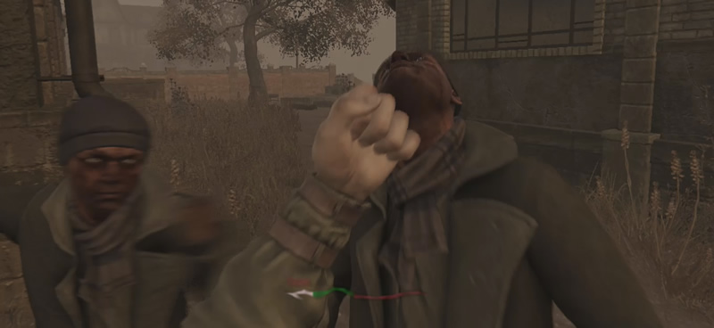
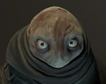
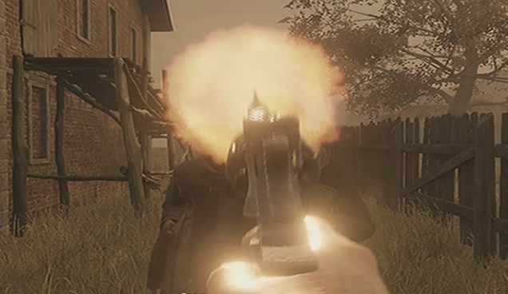
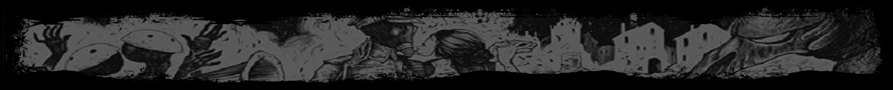
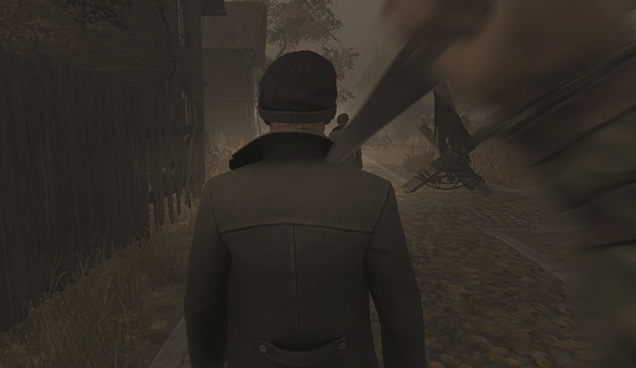
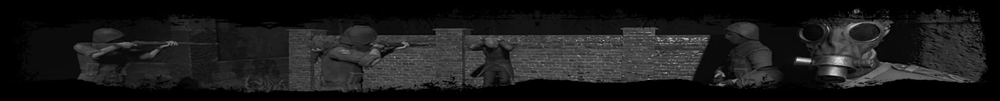
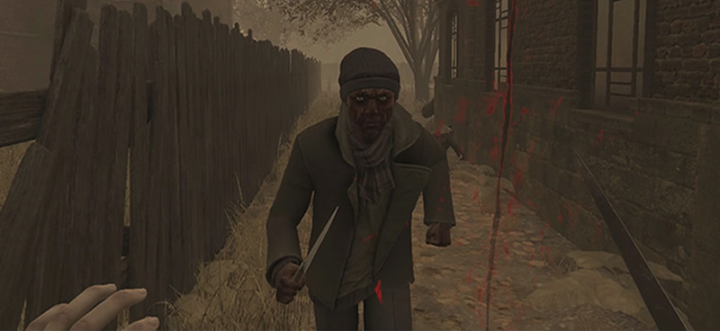

Pesquisar...

Pesquisar...


- Combate
- Comida
- Mapa Util
- Mostrar Tudo


Menu
- Home
- Trocas
- Videos
- +Guias


- Combate
- Comida
- Mapa Util
- Mostrar Tudo

Bem-vindo ao nosso guia de combate!
Aqui explicarei detalhadamente sobre como lutar com os inimigos de forma corpo-a-corpo, a distância ou furtivamente, e, para finalizar, aprenderemos sobre algumas mecânicas acompanhadas de dicas bastante uteis!


- Se você esta tendo problemas com Odongs, recomendo ver nosso guia específico sobre eles aqui. (guia pendente)
ATENÇÃO: Jamais lute usando os punhos ou até mesmo facas contra inimigos que também tenham facas, apesar de ser sim, possível, o risco é muito alto e qualquer erro pode resultar em graves consequências. Eu sempre lido com inimigos armados utilizando ataques corpo-a-corpo potentes de forma furtiva, ou caso furtividade não seja uma opção, tiros na cabeça com armas de fogo são sempre uma alternativa.


Um dos seus maiores aliados no combate corpo a corpo é o ataque potente, apesar dele utilizar muita energia o dano que ele causa combinado com o atordoamento temporário ao inimigo, o torna extremamente útil para causar dano, sem receber de volta. Apesar de parecer simples, esse estilo de combate requer uma boa noção de timing já que o ataque potente demora um tempo para ser executado.
Somente o suficiente para os ataques do mesmo não o alcançarem.
Se mova para trás sempre que necessário evitando virar de costas.
Certifique-se que você tem espaço para se afastar e uma rota de fuga.
Sempre espere o inimigo se aproximar primeiro.
Certifique-se que você tem energia suficiente para o ataque.
Se mova para trás enquanto bloqueia para ganhar tempo e energia.
Fique atento aos movimentos do inimigo!
Caso o inimigo desvie do ataque, se afaste e repita todo o processo.
Os inimigos saem rápido do atordoamento, mas às vezes demoram um tempo até voltarem a persegui-lo.
Aproveite o tempo que conseguir para bloquear e recuperar sua energia sem se arriscar tanto.
Alguns inimigos tentaram lhe acertar um soco logo apos atingidos, por isso é sempre importante os acertar e recuar enquanto bloqueia assim que possível.
Mais de um Inimigo? Apesar de ser difícil é sim possível enfrentar mais de um inimigo, particularmente eu não recomendaria tentar enfrentar mais de dois ao mesmo tempo, pois a situação pode sair de controle bem rápido. Ao enfrentar dois inimigos tenha em mente que a única forma de vencer sem receber dano é se eles estiverem lhe perseguindo em fila, dessa forma você pode carregar e executar um ataque potente em um de cada vez, sempre recuando para recuperar a energia e manter o ritmo.

Ao falar de combate a distância a primeira coisa a se destacar é que NÃO existe como bloquear! Segurar a tecla de bloqueio utilizando uma arma de fogo faz com que você mire com a arma aumentando a precisão. Dito isso fica claro que ao usarmos esse tipo de arma a estratégia é ficar distante do inimigo e SEMPRE manter a arma carregada.
Outro detalhe importante é que tiros na cabeça causam MUITO mais dano que no corpo, então preste atenção na precisão!
ATENÇÃO: Mantenha sempre a arma CARREGADA e com a barra de manutenção cheia ou na terceira barrinha, um travamento inesperado ou falta de munição pode e vai ser fatal!
Mantenha a arma totalmente carregada antes do conflito.
Mantenha a manutenção da arma pelo menos na metade da terceira barrinha.
Tenha espaço para recuar e uma rota de fuga.
Não deixe o inimigo chegar perto o suficiente para lhe atacar.
A precisão das armas a uma longa distância não costuma ser muito boa, mesmo mirando enquanto parado, não se engane!
Humanos morrem com um só tiro na cabeça, odongs precisam de dois.
Quanto mais perto maior sera a precisão da arma.
Se precisar fugir veja a parte de mecânicas no final da página, lá explico e dou dicas importantes sobre!
Mais de um Inimigo? Usando uma arma de fogo é relativamente fácil lidar com vários inimigos (caso ela esteja em bom estado e com munição), o importante é manter a calma, esperar eles se aproximarem, mirar bem na cabeça do que esta mais próximo e atirar, o revólver é a melhor das armas nessa situação, pois consegue atirar até 6 vezes sem ter que carregar, 6 balas 6 mortos!


Falando de furtividade a estratégia é simples de se pôr em prática, porem um tanto quanto instável nos resultados (pelo menos ao enfrentar inimigos humanos). É possível matar os inimigos furtivamente sem receber dano se aproximando do alvo em modo furtivo e o enchendo de ataques potentes antes que ele possa reagir.
ATENÇÃO: Existe um bug em que os inimigos saem do atordoamento causado pelos ataques potentes e correm interrompendo o combo, ser rápido nos ataques potentes e utilizar uma faca diminui as chances disso acontecer, mas não as eliminam!
Segure a tecla do modo furtivo (C no computador) e NÃO SOLTE até o inimigo morrer.
A música de combate não toca enquanto você estiver em modo furtivo, cuidado!
Use a escuridão a seu favor caso seja uma opção.
Não esqueça que os inimigos podem se virar!
Certifique-se de estar com a barra de energia completamente cheia e se manter bem próximo ao alvo para não errar os ataques!
Após cada golpe potente, faca um intervalo super rápido, já que o jogo não permite os executar diretamente.
Caso esteja jogando em uma dificuldade maior que a padrão use uma faca!
Mais de um Inimigo? Infelizmente não há como enfrentar mais de um adversário por vez usando furtividade, pois você é detectado por todos os inimigos próximos quando dá o primeiro soco.

Nessa seção vamos falar um pouquinho sobre vários sistemas que temos no jogo e como jogar de acordo com eles!

Como já foi mencionado antes, bloquear usando os punhos ou segurando alguma arma corpo-a-corpo recupera sua energia, o que não foi dito é que para a energia ser recuperada você precisa estar em combate!
DICA: A melhor forma de saber se você esta em combate é prestar a atenção nos sons do jogo, se a música de combate estiver tocando alguém esta lhe perseguindo, e você pode então, recuperar sua energia.
ATENÇÃO: Os bandidos costumam priorizar guardas, se eles estão lhe perseguindo e verem um guarda desocupado pelo caminho vão parar de persegui-lo para ir atrás do guarda, o que fará você ficar fora de combate novamente, isso é relativamente comum então fique atento.
Uma mecânica muito importante quando falamos de combate é que quando você vira de costas para um inimigo, se ele estiver muito perto de você, seu personagem será afetado por um tipo de efeito debilitador (como se você estivesse sendo empurrado ou puxado) que moverá sua câmera forçadamente para trás.
DICA: Esse efeito debilitador só pode acontecer uma vez a cada 15 segundos para cada inimigo, porem aí existe um detalhe importante, cada inimigo tem um tempo de recarga SEPARADO para essa habilidade, por isso que você é "puxado" varias vezes seguidas quando vira de costas para vários inimigos.
Tendo conhecimento dessa mecânica acima podemos falar um pouco sobre como fugir dos inimigos. Simplesmente virar as costas para os adversários e correr costuma resultar em você sendo "puxado" e recebendo alguns socos até conseguir se virar novamente e fugir.
DICA #1: Algo que pode ajudar com sua fuga é você dar um ataque corpo-a-corpo potente no inimigo para atordoa-lo, se distanciar um pouquinho andando para trás, abaixar suas mãos e aí sim, se virar e correr! Fazendo isso você ficara fora do alcance do "puxão" e terá uma breve oportunidade de fuga.
ATENÇÃO: Caso exista mais de um inimigo próximo a você, a melhor opção ainda assim é simplesmente se virar e correr levando um pouco de dano, mas saindo com vida!
DICA #2: Não esqueça também do truque da energia infinita utilizando o bloqueio, conforme corre e se distancia dos inimigos fique de olho na sua barra de energia, sempre que necessário (e seguro) dê pequenas pausas para bloquear e recuperar ela, assim você mantêm o ritmo e eles nunca chegarão a você!
DICA #3: Outra dica EXTREMAMENTE IMPORTANTE é nunca correr com as mãos para cima, seja segurando uma arma, faca, ou os próprios punhos, enquanto suas mãos estiverem levantadas a sua velocidade de movimento sera MUITO reduzida, então sempre que for correr "guarde" suas mãos e aí sim, corra!
Ao lutar com adversários no corpo-a-corpo sua maior preocupação depois de inimigos armados deve ser com os chutes que os desarmados podem te dar. Esse ataque especial não pode ser bloqueado e, caso lhe acerte, além de tirar uma grande parte da sua vida irá te deixar desorientado durante 5 segundos. Enquanto desorientado você não pode atacar, bloquear e nem trocar de arma, basicamente você só pode se movimentar e observar os inimigos te darem uma surra.
DICA: Apesar de não parecer você ainda consegue correr enquanto desorientado, então sempre que for atingido vire de costas para o inimigo resistindo aos "puxões/empurrões" e segure a tecla de corrida enquanto se movimenta para longe do adversário, mantenha-se fugindo até o efeito desorientador passar e aí sim, considere voltar para a briga ou fugir realmente.